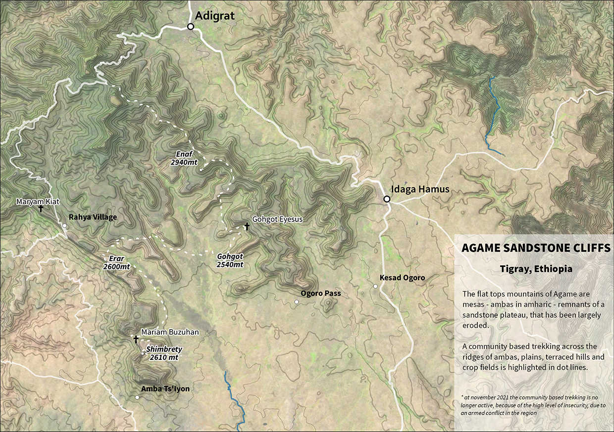

Regione Nord Est Tigray. Etiopia
Le mesas di arenaria dell’Agame in Tigray
Le lunghe lingue sinuose che si alzano su una piana sono ambe, quello che rimane del processo erosivo, come nel lavoro in sottrazione di uno scultore. Camminando su questi resti si vede la “cura” dei contadini per questa terra, unico modo per sopravvivere in un ambiente ostile
Map by fabio artoni/fiftylemons

Cosa racconta questa mappa
La zona di questa parte del nord est Tigray è geologicamente diversa da quella generata dalle grandi effusioni vulcaniche che hanno generato i grandi altopiani e i “trappi” (scale) etiopici. L’attività effusiva qui arrivò parzialmente e con meno intensità e il lavoro di erosione è proceduto più spedto, smantellando i sedimenti e mostrando quello che è terreno pre-cambriano.
In questa mappa dell’Agame i rilievi sembrano lunghe lingue sinuose che si alzano su una piana. Quelle lingue di terreno sono delle mesas, ambe in amarico, e sono quello che rimane del processo di demolizione che ha eroso e portato via il terreno meno protetto, quello tutto attorno alle lingue. Come se giocando sulla sabbia si lavorasse in “sottrazione”, delineando dei rilievi togliendo la sabbia intorno. Nel tempo storico, e non in quello geologico, viene in mente il lavoro che hanno eseguito gli scalpellini quando hanno scavato - in parte prima ancora di diventare cristiani - all’interno di cavità rocciose, togliendo materiale quanto basta e dove basta per lasciare pilastri di roccia che ora sorreggono le volte e le entrate delle “hidden churches of Tigray”, delle chiese nascoste del Tigray.
Le ambe che hanno resistito all'erosione (ma non sarà così per sempre) hanno avuto questa sorte in parte per il percorso dei fiumi, primi attori dell'opera di smantellamento, sia perché ricoperte da cappelli di basalto di eruzioni vulcaniche, più o meno spessi e resistenti, quelli che nelle highlands d'Etiopia hanno modifcato completamente il paesaggio e sono molto più spesse ed estese. Per la loro conformazione particolare, ben definita, le ambe dell'Agame si notano facilmente anche da satellite.
Nel trekking segnato da linee tratteggiate si percorrono le mese dalle cime piatte, si discendono per attraversare piane coltivate e protette da fichi d'india, per l'alimentazione e contro l'invasività del bestiame, si risalgono per arrivare ai rifugi. In un reportage in questo sito, titolato "Le mesas dell'Agame" si racconta del lavoro di conservazione e riforestazione portato avanti dai contadini di questi parti, che in ogni lavoro di cura di questo terreno aspro, ricordano i lutti che portò la carestia di metà anni Ottanta. Lungo il percoso del trekking si incontrano i rifugi: Erar, Enaf, Gohgot e Shimbrety, tutti tra i 2500 e i 3000 metri e tutti, a parte Goghot, costruiti in cima alle ambe sulle pareti a precipizio. Lungo uno dei "ridge" più evidenti, quello che ovest sulla mappa e che va dal villaggio di Raya a Erar e poi a Shimbrety, ci sono due chiese: Maryam Kiat e Maryam Bezuhan.